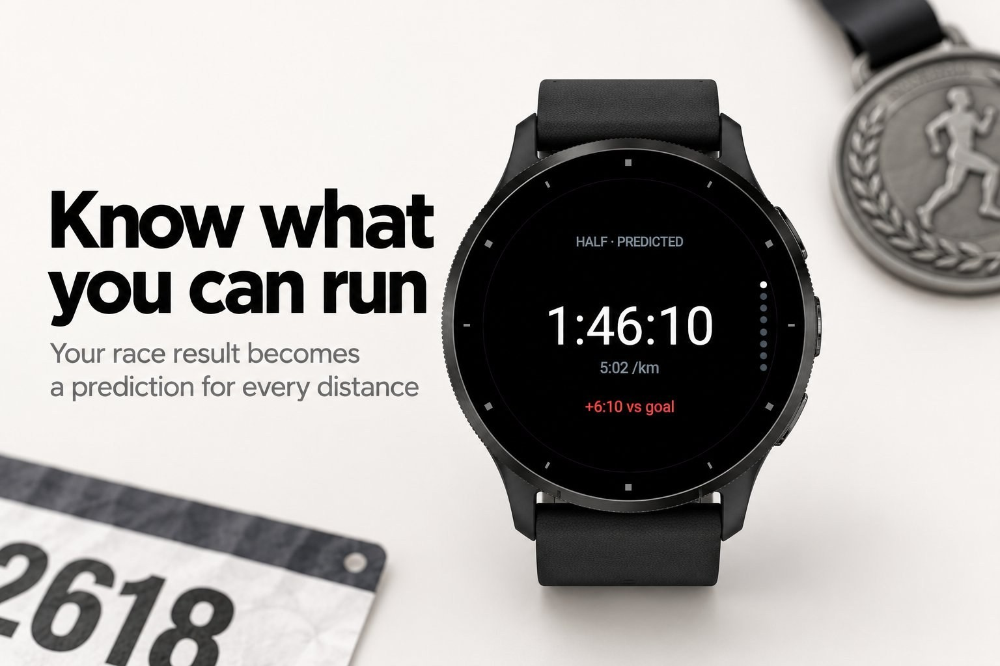
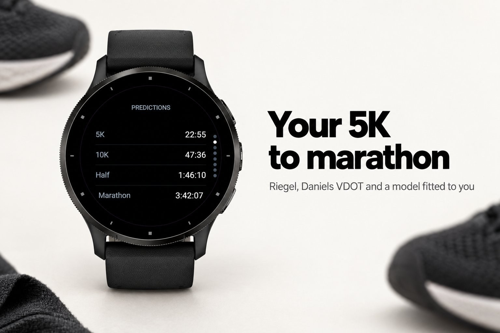
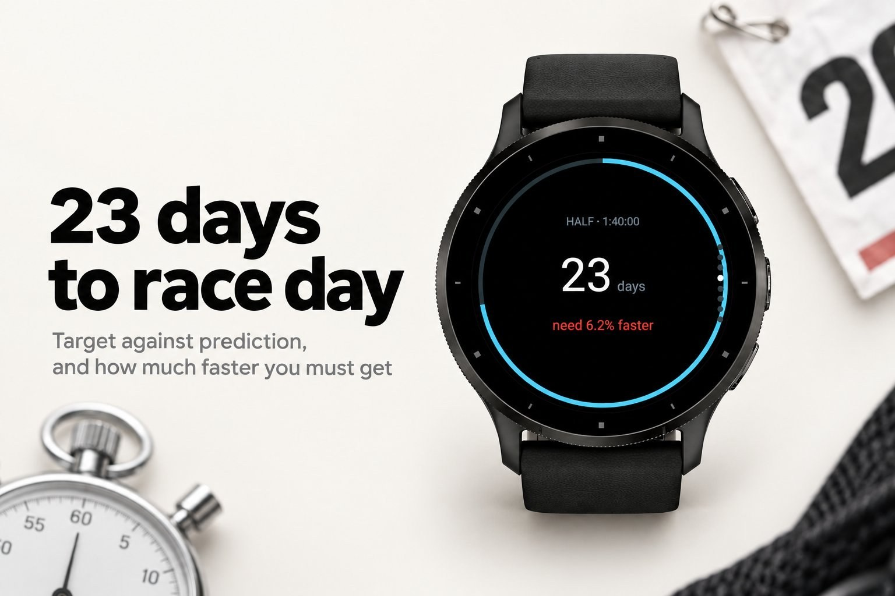
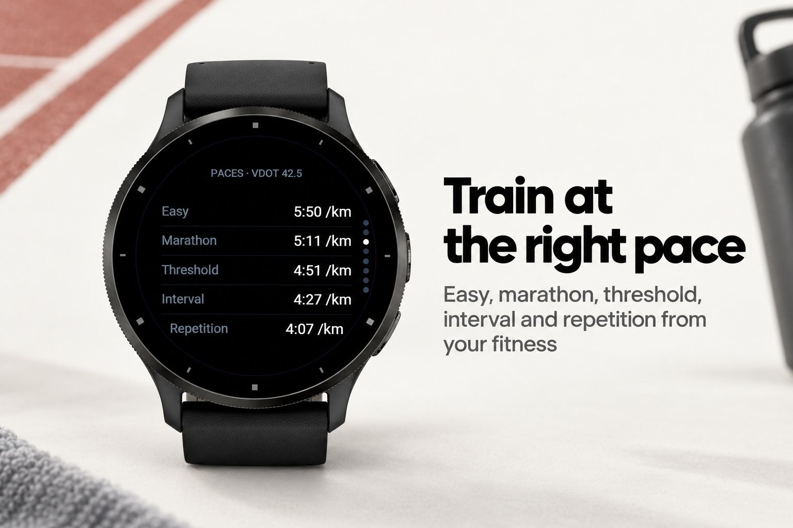
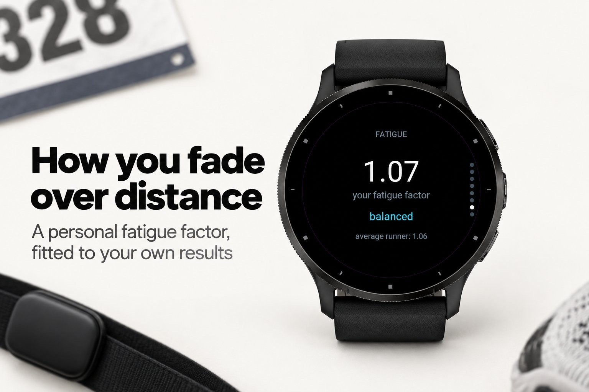

Sport & outdoors · Device app
Race predictor: 5K to marathon from one result.
Submitted to Garmin and awaiting review. The store page opens once it is approved.





Racecast tells you what you can run. Enter a race or time trial you have done, any distance, any time, and your watch predicts your 5K, 10K, half and marathon, with the training paces that fit your current fitness. Set a goal race and Racecast counts down, compares your target with what you are on for today, and tells you exactly how much faster you need to get.
Three models work side by side: the classic Riegel formula, Daniels' VDOT oxygen model, and a personal model fitted to your own results. That personal model learns your fatigue factor, the number that says whether you hold pace over distance better or worse than the average runner. Before the race, the split plan gives you a target time at every kilometre or mile, with the negative split you choose, and the conditions page tells you what today's heat will cost.
Nothing but your watch and one race result. No phone, no account, no internet.